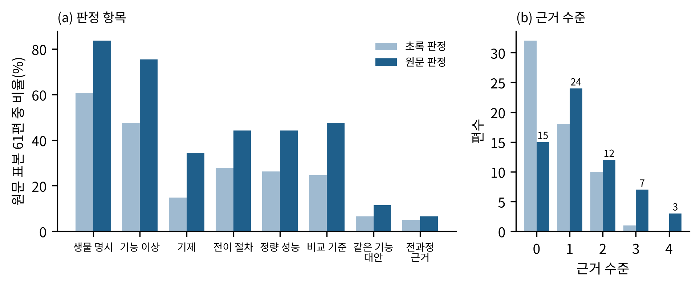
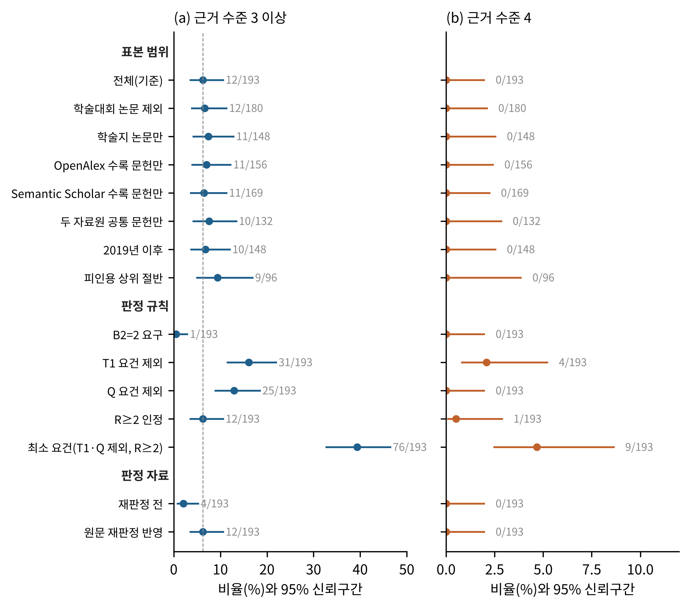
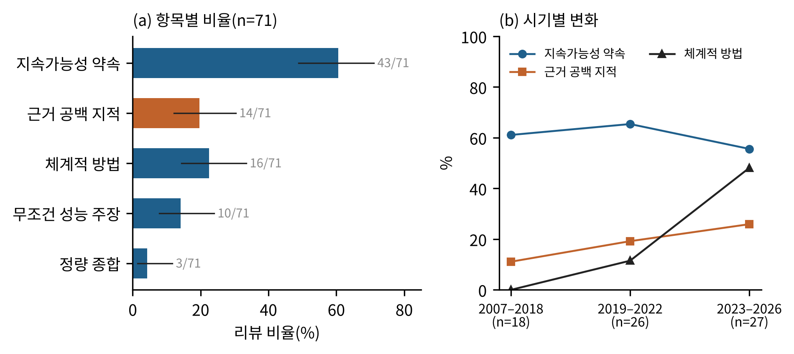
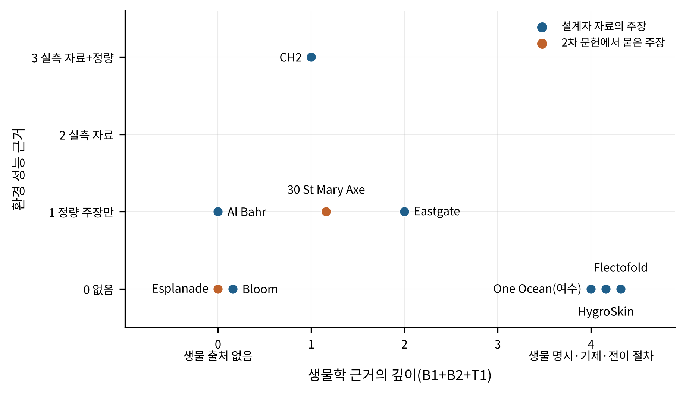
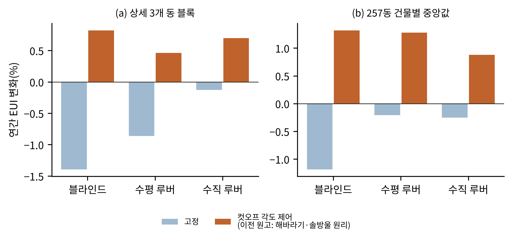
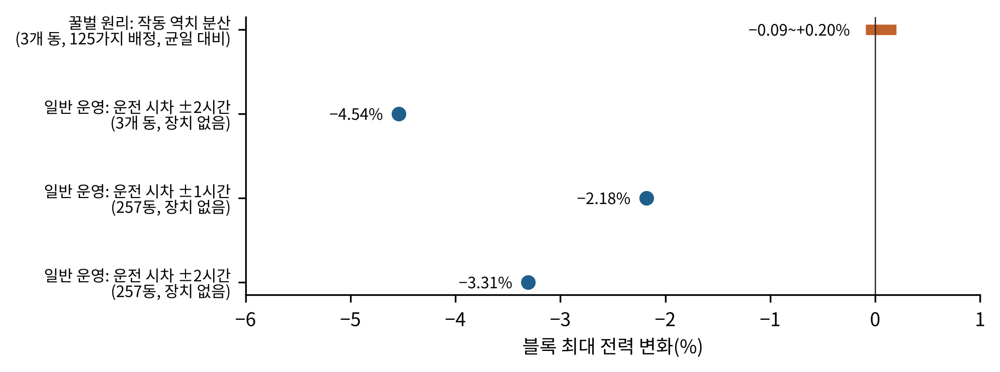
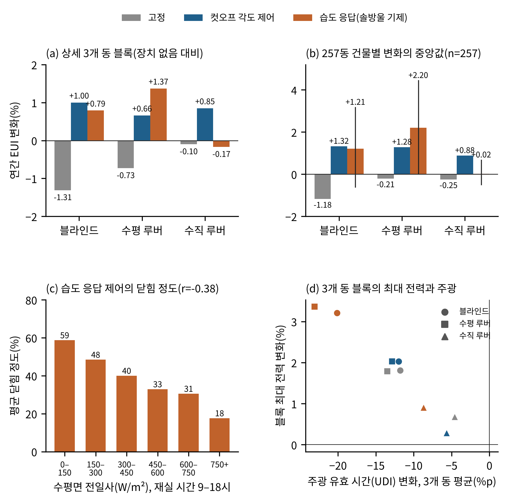

체계적 주장 판정과 키네틱 파사드 시뮬레이션 사례를 중심으로
"생체모방"이라는 이름은 생물학 지식이 설계에 들어왔다는 것, 성능이 낫다는 것, 지속가능하다는 것을 보증하는가. 본 연구는 생체모방 건축에 대한 비판을 확인 가능한 판정 기준으로 바꾸어 외피 생체모방 1차 연구 193편과 리뷰 71편, 대표 건물 9건에 적용하고, 연구자 자신의 키네틱 파사드 연구를 같은 기준으로 다시 읽은 뒤 공정한 비교를 새로 계산했다.
생체모방 건축이 설계와 과학 사이에서 개념적 혼란을 겪고 생명과학이 거의 개입하지 않는다는 지적, 생물 출처가 성능과 지속가능성을 보장하지 않는다는 지적, 생체모방이 건축의 예술성과 자연과의 관계를 왜곡할 수 있다는 지적이 잇따른다. 이 비판들은 대부분 개념 분석이다. 본 연구는 비판을 네 축으로 정리하고, 그중 세 축을 "주장마다 필요한 근거가 있는가"로 바꾸어 물었다.
생체모방 외피 연구의 주장을 다섯 종류로 나누고, ISO 18458의 기능 분석–추상화–전이 절차와 성능 연구의 비교 설계 원칙에 따라 각 주장에 필요한 근거를 판정 항목으로 정했다.
OpenAlex와 Semantic Scholar에서 같은 질의식(생체모방 용어 AND 외피 용어, 제목·초록)으로 2000년 1월~2026년 11월 문헌을 수집해 530건을 얻었다. 제목·초록을 모두 읽고 외피 생체모방 1차 연구 193편을 골라 초록 정독으로 판정했으며, 공개 원문을 확보한 61편은 원문으로 다시 판정했고, 표본 범위와 판정 규칙을 바꾼 민감도 분석을 했다. 비율은 윌슨 95% 신뢰구간, 시기 변화는 코크런–아미티지 추세 검정으로 보았다.
| 수준 | 조건 | 주장 |
|---|---|---|
| 1 | 생물 모델과 기능·기제 | C1 |
| 2 | + 전이 절차 | C2 |
| 3 | + 시뮬레이션 이상 근거의 정량 성능 | C3 |
| 4 | + 같은 기능의 비생체모방 대안과 비교 | C4 |
장치 없는 기준안이나 고정 차양과의 비교는 장치의 효과를 보일 뿐, 생체모방의 기여를 보이지 않는다.
193편의 항목별 판정 결과이다. 막대 위의 가는 선은 95% 신뢰구간이다. 초록 기준 판정이므로 비율은 하한으로 읽어야 한다(원문 61편에서는 모든 항목이 같거나 높아졌다).
초록 판정 기준이다. 원문 판정을 반영하면 수준 3 이상은 21편(10.9%), 수준 4는 3편(1.6%)이다.
생물학 근거와 절차를 갖춘 연구와, 공정한 비교를 한 연구는 서로 다른 집단이었다. 같은 기능 대안과 비교한 14편 가운데 전이 절차를 밝힌 연구는 1편이었고, 그 연구는 특정 생물을 밝히지 않았다.
| 모방 수준 | 편수 | 기제 기술 | 실험 이상 | 같은 기능 비교 |
|---|
구조·재료 계열은 생물학 근거와 실험이, 과정·행동 계열은 시뮬레이션 성능 평가가 중심이다. 형태 수준 34편 가운데 30편은 생물의 기능조차 기술하지 않았다.
| 항목 | 2007–18 | 2019–22 | 2023–26 | p |
|---|
최근 연구는 성능을 수치로 훨씬 더 많이 보고하지만(p<0.001), 생물 기제와 공정한 비교는 늘지 않았다.


같은 시기의 리뷰 71편을 같은 방식으로 판정했다(언어 모델 기반 보조 판정자와 독립 판정 후 합의 — 사람 판정자 간 신뢰도를 대신하지 않음). 리뷰의 60.6%가 생체모방을 지속가능성의 해법으로 제시했지만, 근거의 공백을 구체적으로 지적한 리뷰는 19.7%였다. 1차 연구에서 지속가능성 주장은 27.5%, 전과정 근거는 3.1%였다. 약속은 개별 연구보다 분야를 요약하는 층위에서 증폭되었다.

리뷰와 교재가 반복해 인용하는 건물과 실물 규모 사례 9건을 공개 자료로 판정했다. 근거 수준 3 이상은 없었다. 에너지 절감 수치가 인용되는 건물들은 생물학 근거가 얕거나 틀렸고, 생물학 근거가 충실한 실물 사례는 환경 성능을 시험하지 않았다.

| 사례 | 통상의 설명 | 판정 |
|---|---|---|
| Eastgate Centre | 흰개미 둔덕의 대류 환기 | 둔덕 모형은 생물학적으로 부정됨, 측정 보고서 없음 |
| Council House 2 | 흰개미 환기로 85% 절감 | 10여 개 기술 혼재, 독립 검토는 성능 미달 보고 |
| Esplanade | 두리안 껍질의 차양 | 운영 기관: 의도된 모방 아님 |
| Al Bahr Towers | 꽃처럼 열리는 차양 | 생물 미특정, 수치는 설계 단계 값 |
| One Ocean 주제관(여수) | 극락조화 기구의 키네틱 외피 | 생물학·전이 충실, 환경 성능 보고 없음 |
연구자의 이전 원고는 피부·솔방울과 해바라기·잎 기공·꿀벌의 원리를 키네틱 파사드 제어 규칙으로 옮기고, 서울 역삼역 일대 업무시설 3개 동과 257동을 EnergyPlus로 평가했다. 네 규칙을 생물 이름 없이 입력·상태·출력으로 다시 쓰면 모두 기존 차양·건물 제어 문헌에 있는 규칙이었다.
| 이전 원고의 이름 | 다시 쓴 규칙 | 일반 공학 이름 |
|---|---|---|
| 피부의 부위별 체온 조절 | 구역별 직달 일사 비율에 따라 장치 종류를 배정 | 방위·층별 차양 차등 |
| 솔방울·해바라기의 연속 응답 | 직달 일사를 막는 최소 슬랫 각도로 10분마다 조절 | 컷오프 각도 제어 |
| 잎 기공의 다중 신호 | 일사 300 W/m² 초과이고 실온 23.5 °C 초과면 작동 | 다중 조건 규칙 제어 |
| 꿀벌의 반응 역치 다양성 | 건물마다 다른 작동 역치(200~400 W/m²) | 설정값 분산·부하 분산 |


이전 원고는 생물학 원논문 인용, ISO 18458 절차, 대규모 시뮬레이션을 갖춰 초록 판정 기준으로 193편에서 가장 높은 근거 수준 3(12편, 6.2%)에 해당했다. 그럼에도 추상화 단계에서 생물 원리가 기존 규칙으로 바뀌면서 생체모방의 기여는 시험되지 않았다.
솔방울의 원래 기제 — 센서도 동력도 없이 외기 습도에 따라 천천히 열리고 닫히는 응답 — 를 그대로 옮긴 제어를 같은 모델의 257동에 새로 계산해, 같은 장치의 고정·컷오프 각도 제어와 비교했다(같은 기능의 일반 제어와의 비교, R=3).

기제는 옮겼으나 기능은 옮겨지지 않았다. 솔방울이 습도에 반응하는 것은 씨앗을 날려 보내기 위해서이지 햇빛을 가리기 위해서가 아니다. 생물 안의 기능과 외피의 기능이 다르면, 기제가 충실할수록 결과는 나빠질 수 있다.
모든 판정을 공개한다. 열 이름을 누르면 정렬된다. B1 생물 명시, B2 기능(1)·기제(2), T1 전이 절차, E 근거 유형(0 개념 ~ 4 실건물), Q 정량 성능, R 비교 기준(3 = 같은 기능 대안), S1·S2 지속가능성 주장·근거. ◆는 원문으로 다시 판정한 연구이다.
| # | 연도 | 제1저자 | 제목 | 수준 | B1 B2 T1 E Q R S1 S2 | 근거 |
|---|
생물 기제와 전이 절차가 없으면 "생물에서 착상한"으로 쓴다.
추상화한 원리가 기존 규칙과 같으면 기존 규칙의 이름으로 보고하고, 생물은 착상 배경으로만 언급한다.
옮긴 기제가 생물 안에서 하는 기능이 외피에 필요한 기능과 같은지 확인한다(솔방울의 습도 응답은 씨앗 방출을 위한 것이다).
"생체모방이라서 좋다"는 같은 기능의 비생체모방 대안과, 계산·실험 전에 고정한 비교 설계로 비교했을 때만 쓴다.
공정한 비교가 없다는 결과는 생체모방 외피가 나쁘다는 뜻이 아니라, 생체모방의 기여가 아직 시험되지 않았다는 뜻이다. 구조·재료 계열 연구는 생물학 근거를 상당히 갖추었고, 지속가능성 주장은 1차 연구의 27.5%로 다수가 아니었다(리뷰에서는 60.6%).
판정은 한 판정자가 초록을 기준으로 수행했다. 두 차례로 나눈 판정 사이의 기준 차이는 193편 전체 재점검으로 바로잡았으나(바뀐 판정은 저장소의 audit/recheck_log.json), 사람 판정자 간 일치도는 아직 확인하지 못했고(판정지 공개), 원문은 공개 원문을 확보한 61편만 확인했다. 리뷰 판정의 일치도는 언어 모델 기반 보조 판정자로 점검했으며 사람 판정자 간 신뢰도를 대신하지 않는다. 공개 데이터베이스 두 곳과 영어 초록 문헌만 대상으로 했으며, 초록 없는 적격 문헌 82편은 2018년 이전에 몰려 있다. 사례는 한 연구자의 한 연구이며, 추가 계산은 솔방울 원리 하나를 세 장치와 서울 기후에서 시험한 것이다.